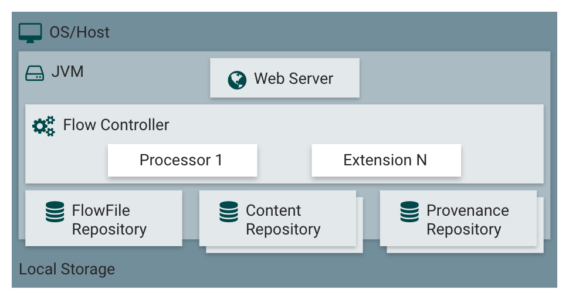
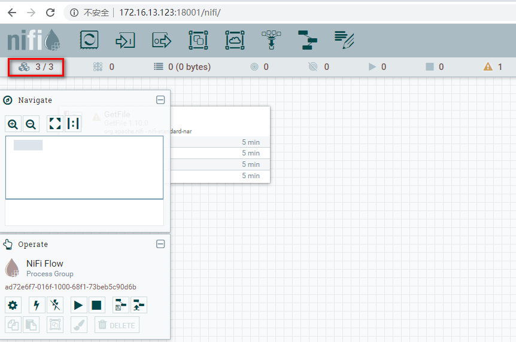
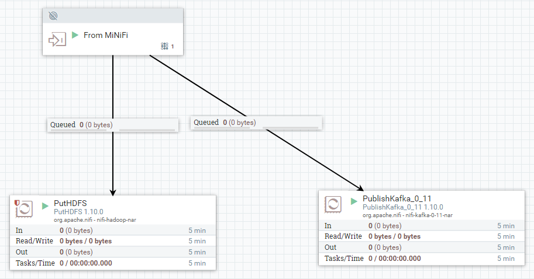
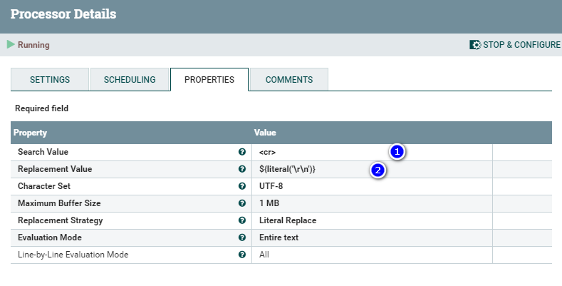
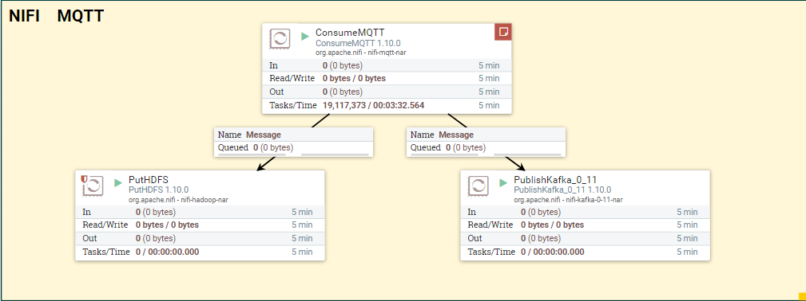
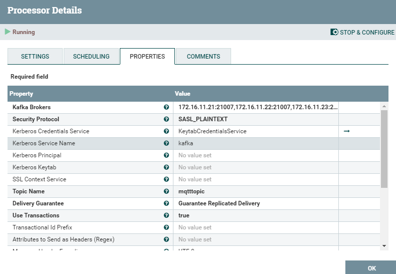
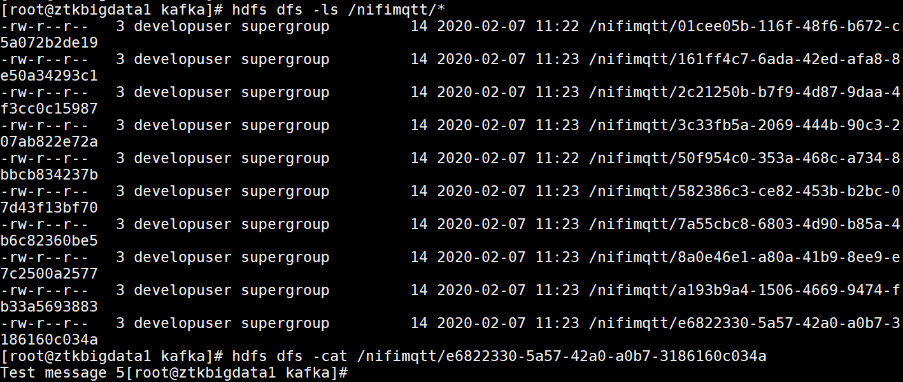

NIFI介绍¶
-
NIFI是一个易用、可扩展、高可靠的数据处理和分发系统。提供图形化界面和大量内置数据处理器，支持多种数据类型的路由、转换。NIFI在华为FusionInsight解决方案中定位为流式数据集成工具，在功能上可替代Flume。
-
NIFI主要价值特性如下：
-
基于web界面的图形化工具，支持拖拉拽的形式快速实现数据处理。
-
高可靠
-
数据传输高可靠，确保数据传输
-
高吞吐、低延迟
-
动态优先级调整
-
回压
-
数据血缘，实现数据全链路的追踪能力
-
高扩展
-
支持自定义开发processor
-
支持快速开发和测试
-
高安全
-
支持SSL、SSH、HTTPS 等类型的数据加密传输
-
支持多租户的鉴权
-
NIFI架构

-
NIFI运行在JVM中，主要组件如下：
-
Web Server：主要用于提供基于http协议的命令和控制API
-
Flow Controller: 是Operation的大脑，提供extentions运行的线程，并且调度extensions何时接收入和处理数据。
-
FlowFile Repository: NiFi用于追踪数据流中flowfile的状态。默认方法是使用Write-Ahead Log技术(简单普及下，WAL的核心思想是：在数据写入库之前，先写入到日志.再将日志记录变更到存储器中。)写到指定磁盘目录。
-
Content Repository: 给定FlowFile的实际内容字节存储的地方。Content Repository的实现是可插拔的。默认方法是一种相当简单的机制，它将数据块存储在文件系统中。可以指定多个文件系统存储位置，以便获得不同的物理分区以减少任何单个卷上的争用。(所以环境最佳实践时可配置多个目录，挂载不同磁盘，提高IO)。
-
Provenance Repository: 存储所有事件数据的地方。Provenance Repository的实现是可插拔的，默认实现是使用一个或多个物理磁盘卷。在每个位置内的事件数据都是被索引并可搜索的。
-
-
Minifi介绍¶
MiNiFi是NiFi的子项目，是一个轻量级的agent，主要用于数据收集。主要有以下几个特征：
-
轻量级，软件包比较小，资源占用少
-
集中管理agent
-
生成数据血缘
-
和NiFi集成用于流式数据处理。
NiFi安装¶
NIFI集群安装¶
-
NIFI支持单机以及集群模式安装 ，推荐使用集群模式安装，提供高可靠性以及更高的数据处理和分发能力。

从NiFi 1.0版本开始，采用了zero-master零主群集模式。 NiFi集群中的每个节点都对数据执行相同的任务，但是每个节点操作的是不同的数据集。 Apache ZooKeeper选择一个节点作为集群协调器coordinator，由ZooKeeper自动处理故障转移。 所有群集节点均向群集协调器报告心跳和状态信息。 集群协调器根据节点的状态以连接或者断开节点。此外，每个群集都有一个主节点master，该节点由ZooKeeper选择。 可以通过任何节点的用户界面访问集群管理器，针对集群的任何更改都将复制到集群中的所有节点，这种架构允许任何一个节点成为集群的访问入口。
-
环境准备
jdk安装¶
-
上传已下载jdk文件到3个节点，执行以下命令完成jdk安装：
rpm -ivh jdk-8u231-linux-x64.rpm
zookeeper安装¶
* 上传下载的zookeeper软件apache-zookeeper-3.5.5-bin.tar.gz到vm1的/opt目录下，执行以下命令解压文件，并拷贝到另外2个节点。
```
cd /opt
tar -zxvf apache-zookeeper-3.5.5-bin.tar.gz
mv apache-zookeeper-3.5.5-bin zookeeper-3.5.5
scp -r zookeeper-3.5.5/ root@172.16.13.122:/opt/
scp -r zookeeper-3.5.5/ root@172.16.13.123:/opt/
```
* zookeeper配置
执行以下命令生成zookeeper配置文件zoo.cfg
```
cp zoo_sample.cfg zoo.cfg
```
修改zoo.cfg文件内容，参考如下：
```
# The number of milliseconds of each tick
tickTime=2000
# The number of ticks that the initial
# synchronization phase can take
initLimit=10
# The number of ticks that can pass between
# sending a request and getting an acknowledgement
syncLimit=5
# the directory where the snapshot is stored.
# do not use /tmp for storage, /tmp here is just
# example sakes.
dataDir= /zookeeperData
# the port at which the clients will connect
clientPort=2181
# the maximum number of client connections.
# increase this if you need to handle more clients
#maxClientCnxns=60
#
# Be sure to read the maintenance section of the
# administrator guide before turning on autopurge.
#
# http://zookeeper.apache.org/doc/current/zookeeperAdmin.html#sc_maintenance
#
# The number of snapshots to retain in dataDir
#autopurge.snapRetainCount=3
# Purge task interval in hours
# Set to "0" to disable auto purge feature
#autopurge.purgeInterval=1
server.1=172.16.13.120:2888:3888
server.2=172.16.13.122:2888:3888
server.3=172.16.13.123:2888:3888
```
3台服务器的zoo.cfg配置文件相同。
在zoo.cfg 配置文件dataDir设置的路径下，执行以下命令创建myid文件：
```
mkdir /zookeeperData
cd /zookeeperData
echo "1" > myid
```
在vm2中执行以下命令创建myid文件
```
mkdir /zookeeperData
cd /zookeeperData
echo "2" > myid
```
在vm3中执行以下命令创建myid文件
```
mkdir /zookeeperData
cd /zookeeperData
echo "3" > myid
```
* zookeeper 启动
分别在3个节点,执行以下命令，启动zookeeper
```
cd /opt/zookeeper-3.5.5/bin/
./zkServer.sh start
```
* zookeeper 验证
分别在3个节点上执行以下命令，查看zookeeper状态及角色
```
cd /opt/zookeeper-3.5.5/bin
./zkServer.sh status
```
结果如下图：

其中一个节点的角色为leader,另外两个节点的角色为follower。
NiFi安装¶
-
上传已下载的nifi-1.10.0-bin.tar.gz文件到/opt目录下，执行以下命令，解压缩安装文件。
cd /opt tar -zxvf nifi-1.10.0-bin.tar.gz
-
在三个节点上分别修改/opt/nifi-1.10.0/conf/nifi.properties配置文件，包括以下内容,其中IP地址为对应结点的IP。
# web properties # nifi.web.war.directory=./lib nifi.web.http.host=172.16.13.120 nifi.web.http.port=18001
# cluster node properties (only configure for cluster nodes) # nifi.cluster.is.node=true nifi.cluster.node.address=172.16.13.120 nifi.cluster.node.protocol.port=28001
nifi.cluster.load.balance.port=16342
# zookeeper properties, used for cluster management # nifi.zookeeper.connect.string=172.16.13.120:2181,172.16.13.122:2181,172.16.13.123:2181 nifi.zookeeper.connect.timeout=3 secs nifi.zookeeper.session.timeout=3 secs nifi.zookeeper.root.node=/nifi
-
修改/opt/nifi-1.10.0/conf/state-management.xml配置文件，包括以下内容：
<cluster-provider>
<id>zk-provider</id>
<class>org.apache.nifi.controller.state.providers.zookeeper.ZooKeeperStateProvider</class>
<property name="Connect String">172.16.13.121:2181,172.16.13.122:2181,172.16.13.123:2181</property>
<property name="Root Node">/nifi</property>
<property name="Session Timeout">10 seconds</property>
<property name="Access Control">Open</property>
</cluster-provider>
-
修改完成后，在三个节点执行以下命令，启动NiFi.
* 登录验证sh /opt/nifi-1.10.0/bin/nifi.sh start
登录http://172.16.13.123:18001/nifi，登录界面如下图，显示集群中有3个节点。

点击右上角图标展开，选择 cluster 查看集群信息如下：

最佳实践¶
场景一：日志数据流式采集¶
-
场景示意图如下：

通过MiNiFie从多个服务器实时采集日志文件，数据实时发送到NiFi中，通过NiFi将数据发送到Kafka和HDFS中，分别用于后续的流式数据处理以及批处理。基于拖拉拽的模式，可以快速实现数据采集流程，大幅减少了代码开发量。基于MiNiFi的轻量级Agent，可以实现对源端性能影响最小。
环境准备¶
Minifi安装¶
-
准备一台tomcat服务器，在tomcat服务器上，安装MiNiFi，实时采集MiNiFi日志，将日志传入NiFi中，通过NiFi写入HDFS归档并写入Kafka进行流式数据处理。
-
参考之前jdk安装步骤，在tomcat服务器上安装jdk1.8
-
下载MiNiFi，点击下载
-
下载MiNiFi-toolkit 转换工具 点击下载
-
将下载的MiNiFi及MiNiFi-toolkit上传到/opt路径下。
-
执行以下命令完成解压
tar -zxvf minifi-0.5.0-bin.tar.gz tar -zxvf minifi-toolkit-0.5.0-bin.tar.gz
tomcat安装¶
-
准备一台centos 服务器用于安装tomcat及测试，本次使用的tomcat 服务器ip是172.16.11.121
-
执行以下命令下载并安装tomcat服务
* 通过浏览器访问http://172.16.11.121:8080，访问结果如下：wget http://mirror-hk.koddos.net/apache/tomcat/tomcat-8/v8.5.50/bin/apache-tomcat-8.5.50.tar.gz mv apache-tomcat-8.5.50.tar.gz /opt/ cd /opt/ tar -zxvf apache-tomcat-8.5.50.tar.gz mv apache-tomcat-8.5.50 tomcat cd tomcat/ sh bin/catalina.sh start

-
在tomcat服务器文件/opt/tomcat/logs/localhost_access_log.2020-02-04.txt中，包括了当前最新的访问记录。
NiFi配置¶
-
在NiFi集群上，配置nifi.properties文件，需要配置site to site内容，开启站点接收服务和端口，参考配置如下：
# Site to Site properties nifi.remote.input.host=172.16.13.120 nifi.remote.input.secure=false nifi.remote.input.socket.port=10000 nifi.remote.input.http.enabled=true nifi.remote.input.http.transaction.ttl=30 sec nifi.remote.contents.cache.expiration=30 secs
-
重启NiFi服务。
创建数据流及模板¶
-
在NiFi中，创建一个名称为"From MiNiFi"的input port，同时创建一个FI Hdfs以及FI Kafka Processor，对接FI 过程可以参考以下指导。点击查看
创建成功后如下图：

-
在NiFi中，创建一个Process Group，双击进入process group，创建一个tailfile Processor和一个remote process group ，并建立连接，如下图:

TailFile参考配置：

Remote Proces Group参考配置：

-
选中Process group中组件，点击左侧按钮创建模板。该模板创建以后导入到MiNiFi中，作为MiNiFI中运行的配置文件。

创建成功后，在右侧菜单 templates 中，下载相应的模板。
-
上传模板到安装了MiNiFi的tomcat服务器上，需要修改xml对应的encoding-version为1.2,此处程序有个Bug，如果不修改，后续转换格式时会报错。

-
执行以下命令，将其从xml格式转换成yml格式，并拷贝到MiNiFi的配置文件目录中。
sh /opt/minifi-toolkit-0.5.0/bin/config.sh transform nifitemplate.xml config.yml cp config.yml /opt/minifi-0.5.0/conf/
-
启动MiNiFi
执行以下命令启动MiNiFi
sh /opt/minifi-0.5.0/minifi.sh start
数据验证¶
-
配置完成后，整体拓扑图如下：

-
通过访问tomcat首页，将在tomcat日志中生成一条访问记录。查看hdfs中是否生成对应的日志文件。如下图：

-
通过以下命令，查看kafka topic接收的数据。
kafka-console-consumer.sh --topic testtopic -bootstrap-server 172.16.11.21:21007,172.16.11.22:21007,172.16.11.23:21007 --consumer.config /opt/hadoopclient/Kafka/kafka/config/consumer.properties
结果如下图，说明Nifi已将相关日志实时发送到Kafka Topic中。

场景二: 医疗行业HL7格式数据集成¶
场景介绍¶
-
本场景演示将HL7格式数据通过NiFi转换成json格式，并存储到hdfs以及kafka中，用于日志归档、批处理以及流式数据处理。
-
整体场景如下图：

首先模拟HL7格式测试数据，将测试数据发布到Kafka中，NiFi通过consumeKafka processor接收测试数据，并通过ExtractHL7Attributes processor解析相关属性，并利用NiFi内置算子，将接收的kafka将数据最终转换成json格式，并存储到FusionInsight HDFS中，同时将Json格式的数据发往Kafka进行流式数据处理。
数据流准备¶
-
创建kafka topic。
在hadoop client机器上执行以下命令，创建topic
kafka-topics.sh --create --zookeeper 172.16.11.21:24002/kafka --partitions 6 --replication-factor 2 --topic h7topic1; kafka-topics.sh --create --zookeeper 172.16.11.21:24002/kafka --partitions 6 --replication-factor 2 --topic h7topic2
-
NiFi数据流配置：
ConsumeKafka 配置参考下图：

Kafka Brokers: 172.16.11.21:21007,172.16.11.22:21007,172.16.11.23:21007 Security Protocol: SASL_PLAINTEXT Kerberos Credentials Service: KeytabCredentialsService Kerberos Service Name: kafka Topic Name: h7topic1 #之前创建的kafka topic名称 Group ID: Demo #可自定义
ReplcaeText 配置参考下图：

Search Value: <cr> Replacement Value: ${literal('\r\n')}ExtractHL7Attributes 配置参考下图：

AttributeToJson 配置参考下图：

JoltTransformJson 配置参考下图：

Jolt Specification: { "OBX_1.UserDefinedAccessChecks": "OBX_1.UserDefinedAccessChecks", "OBR_1.OrderingProvider.FamilyName": "OBR_1.OrderingProvider.FamilyName", "MSH.MessageControlID": "MSH.MessageControlID", "OBX_1.ObservationIdentifier.Text": "OBX_1.ObservationIdentifier.Text", "MSH.SendingApplication.NamespaceID": "MSH.SendingApplication.NamespaceID", "OBR_1.UniversalServiceIdentifier.Text": "OBR_1.UniversalServiceIdentifier.Text", "MSH.ReceivingApplication.NamespaceID": "MSH.ReceivingApplication.NamespaceID", "MSH.ProcessingID.ProcessingID": "MSH.ProcessingID.ProcessingID", "uuid": "uuid", "PID.SSNNumberPatient": "PID.SSNNumberPatient", "OBR_1.FillerOrderNumber.EntityIdentifier": "OBR_1.FillerOrderNumber.EntityIdentifier", "path": "path", "PID.PatientAccountNumber.ID": "PID.PatientAccountNumber.ID", "PID.DateOfBirth": "PID.DateOfBirth", "PD1.PatientPrimaryCareProviderNameIDNo.IDNumber": "PD1.PatientPrimaryCareProviderNameIDNo.IDNumber", "PID.Sex": "PID.Sex", "MSH.MessageType.MessageType": "MSH.MessageType.MessageType", "OBX_1.ReferencesRange": "OBX_1.ReferencesRange", "OBR_1.OrderingProvider.IDNumber": "OBR_1.OrderingProvider.IDNumber", "PD1.PatientPrimaryCareProviderNameIDNo.FamilyName": "PD1.PatientPrimaryCareProviderNameIDNo.FamilyName", "OBX_1.Units.NameOfCodingSystem": "OBX_1.Units.NameOfCodingSystem", "OBX_1.Units.Identifier": "OBX_1.Units.Identifier", "filename": "filename", "PID.PatientName.GivenName": "PID.PatientName.GivenName", "OBX_1.ObservationSubID": "OBX_1.ObservationSubID", "PD1.PatientPrimaryCareProviderNameIDNo.GivenName": "PD1.PatientPrimaryCareProviderNameIDNo.GivenName", "OBR_1.PlacerOrderNumber.NamespaceID": "OBR_1.PlacerOrderNumber.NamespaceID", "MSH.MessageType.TriggerEvent": "MSH.MessageType.TriggerEvent", "PD1.PatientPrimaryCareProviderNameIDNo.AssigningAuthority": "PD1.PatientPrimaryCareProviderNameIDNo.AssigningAuthority", "OBR_1.ResultStatus": "OBR_1.ResultStatus", "PID.PatientName.FamilyName": "PID.PatientName.FamilyName", "MSH.EncodingCharacters": "MSH.EncodingCharacters", "MSH.VersionID": "MSH.VersionID", "kafka.partition": "kafka.partition", "OBR_1.UniversalServiceIdentifier.Identifier": "OBR_1.UniversalServiceIdentifier.Identifier", "OBR_1.ObservationDateTime": "OBR_1.ObservationDateTime", "OBR_1.ScheduledDateTime": "OBR_1.ScheduledDateTime", "OBX_1.ObservationIdentifier.Identifier": "OBX_1.ObservationIdentifier.Identifier", "OBR_1.OrderingProvider.GivenName": "OBR_1.OrderingProvider.GivenName", "OBR_1.SetIDObservationRequest": "OBR_1.SetIDObservationRequest", "OBR_1.ResultsRptStatusChngDateTime": "OBR_1.ResultsRptStatusChngDateTime", "OBR_1.PlacerOrderNumber.EntityIdentifier": "OBR_1.PlacerOrderNumber.EntityIdentifier", "OBX_1.NatureOfAbnormalTest": "OBX_1.NatureOfAbnormalTest", "OBX_1.SetIDOBX": "OBX_1.SetIDOBX", "MSH.FieldSeparator": "MSH.FieldSeparator", "PD1.PatientPrimaryCareProviderNameIDNo.MiddleInitialOrName": "PD1.PatientPrimaryCareProviderNameIDNo.MiddleInitialOrName", "OBX_1.Units.Text": "OBX_1.Units.Text", "OBX_1.ValueType": "OBX_1.ValueType", "kafka.offset": "kafka.offset", "PID.PatientIDInternalID.ID": "PID.PatientIDInternalID.ID", "kafka.topic": "kafka.topic", "OBX_1.ObservationValue": "OBX_1.ObservationValue", "OBR_1.OrderingProvider.MiddleInitialOrName": "OBR_1.OrderingProvider.MiddleInitialOrName" }PutHDFS 参考配置如下图：

hadooop Configuration Resource: /opt/nifi-1.10.0/hdfs-site.xml,/opt/nifi-1.10.0/conf/core-site.xml Kerberos Credentials Service: KeytabCredentialsService Directory: /nifihl7 #s可自定义
PublishKafka 参考配置如下图：

Kafka Brokers: 172.16.11.21:21007,172.16.11.22:21007,172.16.11.23:21007 Security Protocol: SASL_PLAINTEXT Kerberos Credentials Service: KeytabCredentialsService Kerberos Service Name: kafka Topic Name: h7topic2 #之前创建的kafka topic名称
数据测试¶
-
开启两个hadoop client命令行窗口，在窗口一中执行以下命令：
bin/kafka-console-producer.sh --broker-list 172.16.11.21:21007,172.16.11.22:21007,172.16.11.23:21007 --topic h7topic1 --producer.config config/producer.properties
在窗口二中执行以下命令：
kafka-console-consumer.sh --topic h7topic2 -bootstrap-server 172.16.11.21:21007,172.16.11.22:21007,172.16.11.23:21007 --consumer.config /opt/hadoopclient/Kafka/kafka/config/consumer.properties
在窗口一中粘贴以下数据,该数据为模拟的HL7数据格式。
MSH|^~\&|XXXXXX||HealthOrg01||||ORU^R01|Q1111111111111111111|P|2.3|<cr>PID|||000000001||SMITH^JOHN||19700101|M||||||||||999999999999|123456789|<cr>PD1||||1234567890^LAST^FIRST^M^^^^^NPI|<cr>OBR|1|341856649^HNAM_ORDERID|000000000000000000|648088^Basic Metabolic Panel|||20150101000100|||||||||1620^Johnson^John^R||||||20150101000100|||M|||||||||||20150101000100|<cr>OBX|1|NM|GLU^Glucose Lvl|159|mg/dL|65-99^65^99|H|||F|||20150101000100|
如下图：

在窗口二中查看结果，发现已经读取到转换成json格式的数据，数据加载到kafka中成功，可以用于后续的流式数据处理，如flink等。

查看在 hdfs 中存储的文件，如下图，已经查询到对应的文件，该数据可以做为原始数据归档，以及批量数据分析。

场景三：IOT场景实现MQTT数据集成到Kafka和hdfs¶
场景介绍¶
-
本场景模拟NiFi接收IOT MQTT格式数据，并存储到hdfs以及kafka中，用于后续的流式处理和数据归档。
-
场景示意图如下：

环境准备¶
-
本场景通过在Linux Centos上安装mosquitto模拟IOT broker，通过IoT Broker将数据转发到NiFi，用于后续将数据存储到HDFS或者kafka，用于归档、批处理或者流式计算。
-
通过以下命令，在centos服务器上安装mqtt:
yum -y install eple-release yum -y install mosquitto systemctl start mosquitto systemctl enable mosquitto yum install python-pip pip install paho-mqtt useradd huawei mosquitto_passwd -c /etc/mosquitto/passwd huawei
-
修改配置文件/etc/mosquitto/mosquitto.conf，禁用MQTT匿名登录。
allow_anonymous false password_file /etc/mosuitto/passwd
-
执行以下命令重启mosquitto服务
``` systemctl restart mosquitto ````
-
在hadoop client上执行以下命令，创建kafka topic
kafka-topics.sh --create --zookeeper 172.16.11.21:24002/kafka --partitions 6 --replication-factor 2 --topic mqtttopic
数据流准备¶
-
创建如下NiFI数据流，如下图：

ConsumeMQTT Processor参考配置如下图：

PutHdfs Processor参考配置如下图：

hadooop Configuration Resource: /opt/nifi-1.10.0/hdfs-site.xml,/opt/nifi-1.10.0/conf/core-site.xml Kerberos Credentials Service: KeytabCredentialsService Directory: /nifimqtt
PublishKafka Processor参考配置如下：

Kafka Brokers: 172.16.11.21:21007,172.16.11.22:21007,172.16.11.23:21007 Security Protocol: SASL_PLAINTEXT Kerberos Credentials Service: KeytabCredentialsService Kerberos Service Name: kafka Topic Name: mqtttopic #之前创建的kafka topic名称
数据验证¶
-
在hadoop client中执行以下命令，监听kafka topic的输出。
kafka-console-consumer.sh --topic testtopic -bootstrap-server 172.16.11.21:21007,172.16.11.22:21007,172.16.11.23:21007 --consumer.config /opt/hadoopclient/Kafka/kafka/config/consumer.properties
-
在mqqtt客户端，创建mqttpublish.py文件，内容如下：
import paho.mqtt.publish as publish import time auth = { 'username': 'huawei', 'password': 'huawei' } for i in range(10): publish.single('test', payload='Test message %d' % i, auth=auth, hostname='172.16.13.112',port=1883) time.sleep(1) -
执行以下命令，发送消息到MQtt Brokers
python mqttpublish.py
-
查看kafka consumer显示的输出结果，如下图：

-
查看hdfs文件

-
mqtt数据已成功同步到kafka和hdfs，验证完成。